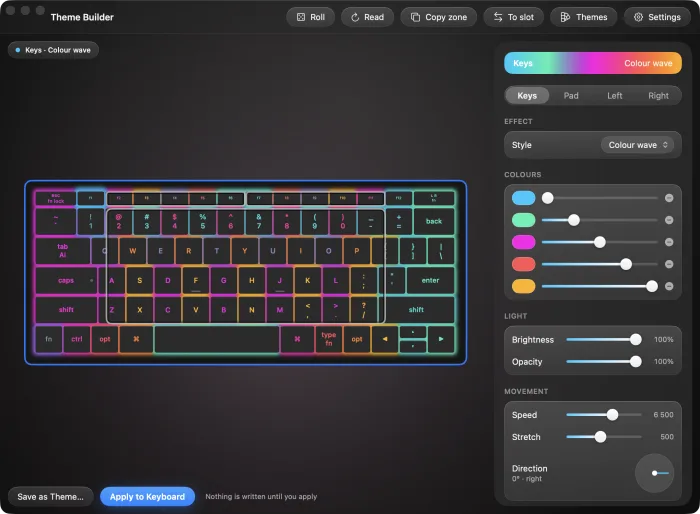
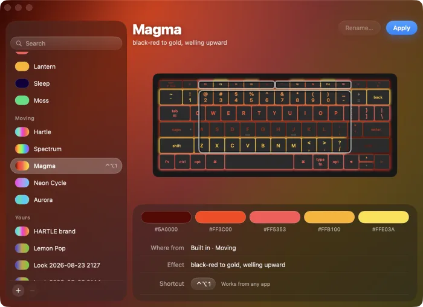
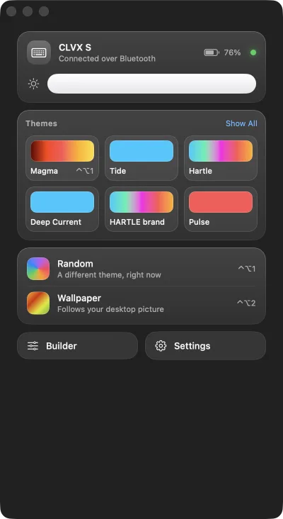
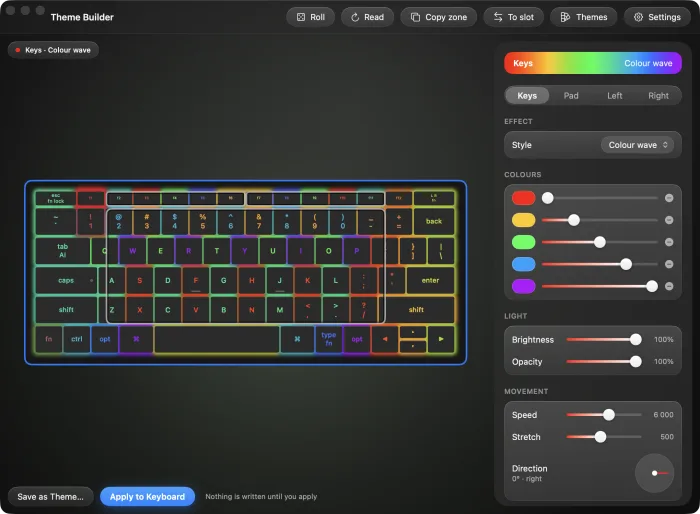
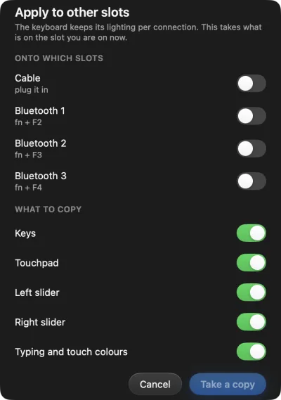
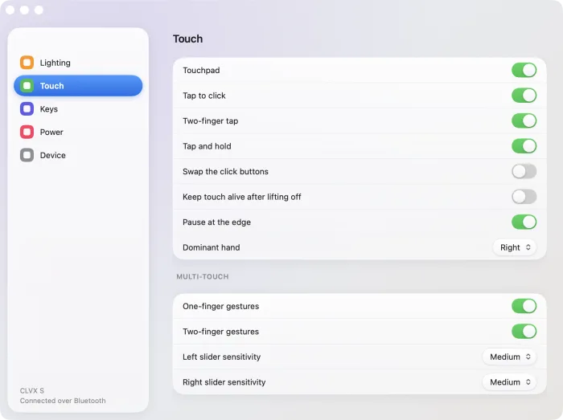
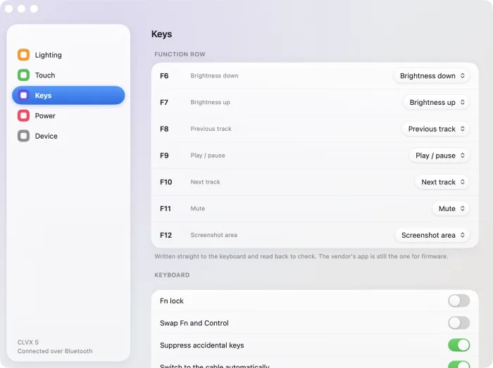

macOS
The menu bar app, the theme builder and the gallery. Apple silicon and Intel.
Download the appmacOS 26 or later. Signed with a Developer ID; not yet notarised, so the first launch needs right-click → Open.
For the Clevetura CLVX
A menu bar app for the everyday things, a builder for the rest, and a preview that shows a theme running before anything is written.
Free and open source · No account · No telemetry · Apache-2.0
Every control shows you the result first. The deck on screen runs at the speed the keyboard runs at, in the direction the keyboard runs it, with the light coming through the legends the way it does on the desk — because the point of a preview is to save you a write you did not want.
Theme Builder
The keys, the touch surface, and the two strips along the function row — each with its own colours, its own effect and its own speed. Drag one zone onto another to copy its light. The keyboard hears about it when you press Apply, and not before.

Themes
Steady, breathing and moving. Pick one and the keyboard on screen wears it immediately, moving, so you can tell a wave from a cycle without applying either. Save what you build and it becomes a file on your Mac — one you can rename, remove, or send to somebody.

Menu bar
Brightness, six themes, a roll of the dice, and the battery the keyboard reports. Every row acts the moment you press it, and says so while it is working — because a Bluetooth write takes about a second, and a button that looks dead gets pressed twice.

Match your desktop
One press reads your wallpaper and builds a scheme from the colours that actually carry the picture — ranked by how vivid they are, not by how much of the screen they cover, so a red maple over an orange sunset gives you red and orange instead of five browns. Video wallpapers included.

Slots
The CLVX keeps a separate scheme for the cable and for each of its three Bluetooth channels. Choose the ones you want, take a copy, and the app walks you through them one at a time.

Settings
Touch sensitivity, dominant hand, backlight and idle timeouts, power. A row your keyboard does not carry is shown and dimmed rather than hidden, so you can tell a missing feature from a missing setting.

Function row
F1 through F12, each set to brightness, transport, volume, a screenshot, Spotlight, or a plain function key. Written straight to the keyboard and read back to check, the same way everything else here is.

Clevetura ships TouchOnKeys for its keyboards. It is the reference for what the hardware does, and it does things Clevertuna does not. This is where the two differ.
| Clevertuna | TouchOnKeys | |
|---|---|---|
| macOS | Native app | Yes |
| Windows | Tray app, unreleased | Yes |
| Linux | CLI, TUI and a bar applet | No |
| Configure over Bluetooth | Yes | Cable only |
| Export a theme to a file | Yes | No |
| Import someone else's theme | Yes | No |
| Match the desktop wallpaper | Yes | No |
| Copy a scheme between slots | Yes | No |
| Scriptable | Every action has a command | No |
| Verifies what it wrote | Reads back and compares | Not stated |
| Key remapping | The function row | Yes |
| The AI key | Reads its state | Yes |
| Firmware updates | No — separate bootloader | Yes |
| Source available | Apache-2.0 | Closed |
| Account required | Never | Varies |
| Telemetry | None | Not stated |
Clevetura, CLVX and TouchOnKeys are trademarks of their owner. Clevertuna is an independent project and is not affiliated with, endorsed by, or supported by them. Use the vendor's app for firmware updates — that runs over a separate bootloader this project has not touched, and a bad flash is not a recoverable mistake.
How it was built
Nothing about this keyboard's configuration interface was published. It was worked out from the wire: the HID report framing, the base64-and-CRC envelope, the protobuf field numbers, and the handful of unit conversions that are not obvious — that speed is a period counted backwards, that opacity is stored as its complement, and that a gradient angle and the stored direction are mirrors of one another.
It is all documented, so anyone can write their own client without starting where this started.
The menu bar app, the theme builder and the gallery. Apple silicon and Intel.
Download the appmacOS 26 or later. Signed with a Developer ID; not yet notarised, so the first launch needs right-click → Open.
One binary. A CLI, a full-screen TUI, and a picker for your status bar.
Build it — one commandNo prebuilt binary yet. cargo build --release and it is done; Bluetooth needs BlueZ.
Rust, no crates. The whole thing compiles from a clean checkout.
Clone the repositorycargo build --release
No licence tiers, no telemetry, no upsell. Clevertuna is free and stays free. If you want to put something behind it, these all go to the work.
GitHub Sponsors Patreon Liberapay Ko-fi Wise PayPal Stripe
Or star the repository — it costs nothing and it is how people find it. github.com/hartle-tech/clevertuna